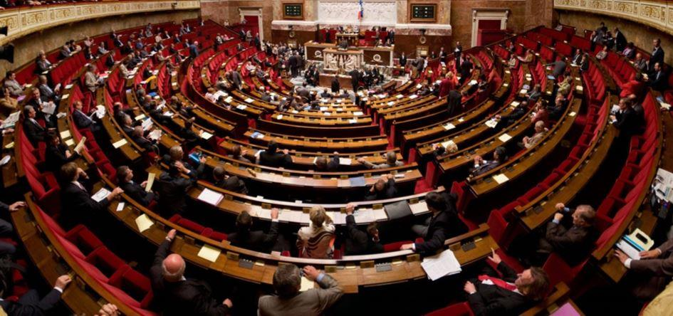

Une analyse de la question monétaire permet d’atteindre très rapidement la question, essentielle, de la souveraineté, elle-même liée à la notion d’État. La privatisation de la monnaie est la cause première de la perte de souveraineté de l’État car celui qui finance est toujours en position de force par rapport à celui qui a besoin d’être financé. Cause première de la dégradation politique, cette privatisation n’est néanmoins pas la seule cause de la déchéance étatique, laquelle répond à une chaîne de causalité de nature institutionnelle.
Nous allons distinguer les deux étapes essentielles de la privatisation de la monnaie (I) avant de considérer pourquoi (II) et comment (III) cette privatisation a pris le contrôle du phénomène politique.
PRIVATISATION DE LA MONNAIE
Si l’État a peu à peu perdu toute consistance politique, c’est essentiellement dû à l’accaparement par les orfèvres, à la fois banquiers et commerçants, des richesses au niveau national, puis au niveau international. Cet accaparement s’est fait à la faveur de deux phénomènes : l’installation progressive d’une confusion dans la compréhension du phénomène monétaire et l’instauration du concept de « banque centrale » qui a permis un contrôle, par les banquiers, des masses monétaires en circulation.
La distorsion dans la compréhension du phénomène monétaire est due à la confusion, sinon créée du moins entretenue par les banquiers commerçants, entre l’institution monétaire et le vecteur − matériel ou non − de la monnaie. Alors que la monnaie a été conçue comme une institution politique chargée de favoriser la circulation des biens et services, sa conception a peu à peu dérivé en une conception purement matérialiste consistant à assimiler la fonction monétaire à son vecteur matériel. Cette confusion a été réalisée à la faveur de la conjonction de la pratique quotidienne des orfèvres – qui sont à la fois banquiers et commerçants – et de l’intervention de la papauté laquelle s’est historiquement prononcée contre le droit de seigneuriage des princes et pour une assimilation de la valeur de la monnaie à son poids de métal précieux. Il s’agissait alors de faire passer l’idée selon laquelle la monnaie était, par nature, indépendante du pouvoir politique temporel.
La seconde atteinte au pouvoir politique par les banquiers commerçants a été introduite par l’apparition du phénomène nouveau appelé « banque centrale ». Ces institutions sont nées sous le signe de l’imposture : présentées comme des banques d’État, elles disposaient à ce titre de la garantie de l’État − c’est-à-dire des contribuables de l’État − alors que ses capitaux restaient dans des mains privées. L’appropriation par des intérêts privés est le vice initial du concept de banques centrales.
C’est ainsi que la banque d’Angleterre (1694), la Banque de France (1800), la Fed (1913), la Banque des règlements internationaux (BRI/BIS 1930) le système européen de banques centrales (dit SEBC, décidé par le Traité de Maastricht en 1992 et entré en vigueur en 1999) reflètent toutes un désengagement des instances politiques de l’État dans la gestion centralisée des masses monétaires en circulation.
Aujourd’hui, la distinction institutionnelle fallacieuse entre gestion monétaire et gestion politique est entrée dans l’inconscient collectif comme une « normalité » ; tout le monde estime normal que les banques centrales soient « indépendantes » du pouvoir politique. Personne ne se pose plus la question de savoir « indépendantes » vis-à-vis de qui et surtout pourquoi ?
Dès que vous évoquez le problème politique généré par l’indépendance de la banque centrale vis-à-vis du gouvernement, les âmes qui se croient éclairées vous répondent immanquablement : souvenez-vous de Weimar ! Mais à la vérité, l’épisode de Weimar est une mauvaise réponse car l’hyper inflation de cette époque a été le résultat d’une politique elle-même sous domination capitalistique.
Certains rétorqueront que la banque de France a été « nationalisée » mais là encore, il faut s’entendre sur les termes : que signifie réellement une banque « nationalisée » par un État lui-même entièrement sous dépendance des principaux propriétaires de capitaux… ?
MONNAIE, APANAGE DE LA SOUVERAINETÉ
Pour avoir les moyens d’exercer sa mission, un gouvernement doit disposer intégralement des moyens monétaires. Ainsi, Napoléon lui-même reconnaissait que « la main qui donne est au-dessus de celle qui reçoit ».
Lorsque la gestion monétaire échappe au gouvernement, celui-ci est soumis, par construction, à la volonté de ceux qui détiennent la monnaie, ces derniers pouvant lui imposer des contreparties personnelles ou collectives en échange de son soutien monétaire.
Mais, plus grave, l’histoire nous apprend que ceux qui contrôlent la monnaie prennent aussi le contrôle des institutions étatiques, essentiellement au moyen de la corruption, qu’il est aujourd’hui de bon ton d’appeler « lobbying » et qui domine toute activité législative. Ce phénomène avait été parfaitement anticipé par le premier grand banquier moderne, Mayer Amschel Rothschild (1743 – 1812), qui s’est clairement prononcé comme suit : « Donnez-moi le contrôle de la monnaie d’une Nation, et je me moque de qui fait les lois ! ».
Il est intéressant de constater que l’accroissement du pouvoir des banquiers commerçants est allé historiquement de pair avec la perte de substance du concept politique et la captation du pouvoir qui l’accompagne par des intérêts privés.
La séparation des pouvoirs et le parlementarisme ont été les éléments institutionnels permettant la future domination du fait économique sur le fait politique
Par souveraineté étatique, il faut entendre, la capacité plénière, pour un État, matérialisé par un gouvernement, de rendre justice, ce qui suppose la maîtrise des lois qui s’appliquent sur son territoire et la capacité d’assurer la sécurité intérieure et extérieure du groupe formé par ses ressortissants. Il faut comprendre qu’un État est, par hypothèse, une émanation institutionnelle de ses ressortissants, une sorte de mandataire chargé de mettre en œuvre, le mieux possible, l’intérêt commun à tous ses habitants.
Ainsi conçu, les représentants de l’État sont « responsables » c’est-à-dire qu’ils peuvent être sanctionnés s’ils sont pris en grave défaut, c’est-à-dire essentiellement s’il est avéré qu’ils n’ont pas mis en œuvre « l’intérêt commun » des ressortissants en privilégiant certains intérêts particuliers au détriment de l’intérêt commun.
Or, depuis l’instauration de la séparation des pouvoirs, assortie du système parlementaire, la situation politique se présente de la manière suivante : le gouvernement est formellement dépourvu de toute autorité politique car le principe de séparation des pouvoirs lui a officiellement retiré les attributs législatif et judiciaire. Il est par ailleurs dépourvu de toute capacité décisionnelle de long terme qui appartient structurellement aux partis politiques et aux hauts fonctionnaires inamovibles.
LE PROBLÈME POLITIQUE GÉNÉRÉ PAR LE PRINCIPE DE « SÉPARATION DES POUVOIRS »
La « séparation des pouvoirs » est, à tort, présentée comme une limitation du pouvoir alors qu’elle est réellement une dissolution du pouvoir politique.
Car le pouvoir politique consiste, par essence, à organiser « la vie de la Cité » ; il ne peut s’entendre que d’un pouvoir capable de rendre la justice (ce qui suppose la maîtrise entière des règles qui s’appliquent sur son territoire) et d’assurer la sécurité de ses ressortissants. Ainsi compris, le pouvoir politique a pour fonction essentielle de gérer les intérêts antagonistes qui peuvent exister dans une société déterminée, dans le sens bien compris de l’intérêt commun à tous ses membres.
La séparation des pouvoirs, en imposant un séquençage du pouvoir entre différents organismes prétendument indépendants – législatif, exécutif et judiciaire − a opéré une véritable dissolution du pouvoir politique car ce dernier perdait, de facto, les moyens concrets d’exercer le pouvoir souverainement c’est-à-dire en pleine capacité et en pleine responsabilité. Ainsi dissout, le pouvoir devient un ersatz de pouvoir, il est une entité apparente qui a perdu les attributs du véritable pouvoir ; l’État a perdu dans les faits toute autorité sur ses décisions.
Puisque le pouvoir réel n’est plus conforme au pouvoir apparent, il n’y a donc plus moyen, pour les populations vivant sous son joug, de l’atteindre réellement et de le sanctionner. La séparation des pouvoirs a ainsi été le principal artisan de la disparition du lien juridique entre « pouvoir » et « responsabilité ».
Nous retrouvons ici la méthodologie de l’asymétrie, utilisée de tout temps par les banquiers pour atteindre leur résultat qui est la prise de pouvoir total. C’est précisément par l’organisation de l’asymétrie dans la détention d’informations que les principaux banquiers ont fait leur richesse, c’est également par la mise en place de l’asymétrie entre pouvoir et responsabilité, autrement dit par la mise en place d’une dichotomie entre pouvoir apparent et pouvoir réel, qu’ils ont assuré leur impunité politique.
La nature ayant horreur du vide, la dissolution institutionnellement programmée du pouvoir politique réel s’est accompagnée de l’émergence, dans l’ombre, d’un autre pouvoir c’est-à-dire d’un autre acteur ayant la capacité de décider pour tous : le pouvoir économique, celui dont disposent les principaux détenteurs de capitaux.
LE PROBLÈME POLITIQUE GÉNÉRÉ PAR LE RÉGIME REPRÉSENTATIF (RÉGIME PARLEMENTAIRE)
L’institution du régime parlementaire a pour conséquence directe que le gouvernement, devenu « pouvoir exécutif » ainsi que le pouvoir dit « législatif » sont en réalité dépendants des partis politiques. Or les partis politiques ne sont réellement responsables que devant les instances qui les financent : les apporteurs de capitaux qui feront fonctionner la machine à élections. Au surplus, l’alternance permanente des partis politiques au pouvoir, liée au système dit représentatif, est par essence incompatible avec la pérennité du pouvoir politique nécessité par des prises de décisions de long, voire très long, terme. Ces dernières sont donc captées par les hauts fonctionnaires inamovibles et formatés dans des écoles « de pouvoir ».
S’agissant du « pouvoir de faire des lois » il faut comprendre que la mise en œuvre concrète du pouvoir législatif par un organisme dédié, le parlement, est, à plus d’un titre, une imposture.
D’une part, un État n’a nul besoin d’un organisme dont la seule fonction est de créer des lois. L’existence même d’une telle institution est le gage, sur le long terme, d’une profusion de textes qui, fatalement, générera une insécurité juridique endémique nuisible aux ressortissants dudit État.
D’autre part, la démocratie dite « représentative » mise en œuvre par l’intermédiaire d’un parlement est l’antithèse exacte du principe démocratique. En effet, les « élus » du peuple se voient accorder, à chaque élection, un blanc-seing total leur permettant de voter sur tout type de sujet, de n’importe quelle façon. Aucun contrôle populaire n’existe a posteriori à l’exception du « tout ou rien » consistant à ne pas reconduire l’élu à la prochaine élection.
Or, justement, apparaît ici une deuxième supercherie : celle consistant à laisser croire que le peuple vote pour l’élu de son choix. Rien n’est plus faux : les élus sont proposés à l’élection par des partis politiques et les électeurs n’ont d’autres choix, au niveau national, que de voter pour des candidats présélectionnés. C’est justement à cette occasion qu’apparaît le véritable pouvoir, celui que les partis politiques respectent : le pouvoir de l’argent permettant auxdits partis, qui sont des armes de conquête du pouvoir politique formel, de financer les perpétuelles élections qui les maintiendront au pouvoir.
Par le blanc-seing général donné à des « représentants » sans aucun contrôle politique a priori et sans aucun contrôle technique a posteriori, le parlementarisme d’origine anglais n’est structurellement pas de nature à assurer que la prise de décision politique sera conforme au « bien commun » c’est-à-dire à l’intérêt commun (plus petit dénominateur commun) des ressortissants de l’État.
En revanche, le parlementarisme dit représentatif est parfaitement adapté à la captation du pouvoir politique par la caste des dominants économiques…
Le régime parlementaire de type représentatif a, via l’institution des partis politiques, pour effet direct de faire prévaloir l’intérêt privé sur l’intérêt commun. Autrement dit, contrairement à la définition politique de l’État, le parlementarisme a pour effet de confier la gestion politique d’un territoire au pouvoir économique ; lequel a pour seul objectif d’assurer la prééminence des intérêts économiques de la caste des principaux propriétaires de capitaux.
L’État, capté par des intérêts privés, est substantiellement inapte à mettre en œuvre le principe d’autodétermination interne des peuples, alors pourtant que ce principe1 a été proclamé par les instances internationales sur l’initiative des pays occidentaux, autoproclamés démocratiques. Il faut ici se rappeler que les États ayant introduit ce principe avaient eux-mêmes perdu toute consistance politique réelle.
Ce principe d’autodétermination des peuples, qui suppose une autodétermination interne et externe, est reconnu comme un principe fondamental du droit international. Ce principe, qui a la nature juridique d’une proclamation, déclaration d’intention à valeur dite universelle, a eu pour objectif officiel d’accompagner ce qu’il est convenu d’appeler la décolonisation.
Mais en réalité, la décolonisation dont il est question a été largement fictive : car la colonisation politique s’est en réalité transformée en colonisation financière qui met les peuples sous la dépendance non pas d’autres peuples mais bien des grands propriétaires de capitaux (naissance par exemple du franc CFA et du franc CFP en 1945). Ici encore, nous sommes en pleine hypocrisie qui prend la forme d’une imposture institutionnelle. L’imposture institutionnelle nationale propre aux pays occidentaux a eu tôt fait de s’étendre en imposture institutionnelle au niveau international.
En conclusion : les actuelles « démocraties occidentales » sont en réalité des impostures institutionnelles fondées sur l’irresponsabilité des décideurs réels, garantissant une impunité totale aux tireurs de ficelles, les tenanciers du pouvoir économique.
En conclusion, le régime parlementaire, allié au principe de séparation des pouvoirs, tel que nous le connaissons depuis la Révolution de 1789 est structurellement inapte à mettre en œuvre le principe d’autodétermination des peuples ! Ajoutons, à des fins d’exhaustivité, qu’une « constitution » n’est en aucune façon une garantie démocratique ; tout au contraire, en ce qu’elle est l’apanage incontournable de la séparation des pouvoirs, la présence d’une constitution est au contraire le signe de la dépendance du pouvoir politique apparent au pouvoir économique caché mais réel.
Pour bien comprendre l’imposture universelle sous laquelle nous vivons, il faut absolument, impérativement, revenir aux fondamentaux de l’organisation sociale. Nous ne comprenons aujourd’hui l’État et l’institution politique que comme des rouages indépendants, organisés autour de la fameuse « séparation des pouvoirs » et reliés entre eux par « une Constitution ». La Constitution est ainsi l’indispensable compagnon de la séparation des pouvoirs ; de la même façon que les partis politiques sont les inséparables compagnons du principe parlementaire, lui-même issu de la séparation des pouvoirs. Or, cette présentation du phénomène politique, unanimement décrit comme « démocratique » est tout à fait fallacieuse ; ainsi compris, le pouvoir politique échoit désormais, en catimini, aux tenanciers du pouvoir économique. Alors que le pouvoir politique apparent ne rend réellement de comptes qu’à ses créanciers, il devient en réalité politiquement irresponsable devant ses ressortissants. Au surplus, les mauvaises décisions politiques de long terme, prises à un moment donné, ne peuvent plus être sanctionnées puisque les instances apparentes qui les ont prises ont depuis longtemps été remplacées.
La vacance de la responsabilité politique n’a pas été comblée par une responsabilité des détenteurs du fait économique puisque ce pouvoir, bien réel, reste néanmoins caché, inapparent ; les détenteurs du pouvoir économique, qui sont l’autorité politique réelle, n’endossent aucune responsabilité politique.
Nous assistons donc à une augmentation du pouvoir dévolu à des instances cachées ainsi qu’à une disparition de la responsabilité politique afférente au pouvoir. Voilà précisément où se situe le niveau de démocratie de nos régimes politiques ! L’imposture politique sert de paravent à la concentration des pouvoirs et à l’irresponsabilité politique érigée en principe de gouvernement !
Aujourd’hui, en raison du fait que les tenants du système économique, c’est-à-dire les principaux propriétaires de capitaux ont pris le contrôle des institutions étatiques autant que des institutions internationales, on assiste à une complète subversion de l’État, lequel est devenu le mandataire du « fait économique » c’est-à-dire des intérêts privés des principaux propriétaires de capitaux.
Aussi, il faut bien comprendre que l’État tel qu’il est devenu n’est plus un État souverain et que la forme apparente d’État n’est pas sous-tendue par une quelconque réalité politique. En matière d’État, nous sommes dans un ordre sémantique purement formel, c’est-à-dire dépourvu de tout sens et dans l’organisation d’images ne correspondant pas à la réalité. Une telle organisation politique est, au contraire, à l’exact opposé de la mise en œuvre du principe démocratique et du droit à l’autodétermination des peuples.
Par extension, les institutions politiques de tous les pays ayant suivi le même processus institutionnel (séparation des pouvoirs et régime parlementaire) ne sont structurellement pas aptes à respecter le « droit des peuples à disposer d’eux-mêmes » qui est pourtant l’essence du « principe démocratique ».
Le retour d’un véritable pouvoir politique s’accompagne d’une réorganisation institutionnelle de l’État et ne nécessite pas de « constitution » puisqu’il n’y a pas d’utilité à organiser les relations entre des entités politiques distinctes, celles-ci étant à nouveau réunies dans un « pouvoir politique réel ».
Le « pouvoir politique » s’entend d’un pouvoir responsable de son mandat consistant à protéger l’intérêt commun à tous ses membres. L’État a, historiquement et conceptuellement, une seule fonction politique : celle de faire respecter le plus petit dénominateur commun de ses membres. Ce respect de l’intérêt commun ramène l’État à sa juste valeur : celle de faire respecter un ordre naturel.
L’instauration d’une véritable démocratie passe, de façon mécanique et systémique, par la réinitialisation de l’organisation politique. La réalité du principe proclamée de l’autodétermination (interne) des peuples ne pourra effectivement être mise en œuvre qu’à la faveur de l’abandon de la séparation des pouvoirs et du régime parlementaire. Des institutions réellement démocratiques devront prendre la forme du mandat impératif, lequel ne pourra être effectivement mis en œuvre que par un retour à une organisation sociale de nature thématique, sous la forme de « corps intermédiaires ». Cette nouvelle organisation sociale rétablira le principe juridique de la responsabilité politique des décideurs catégoriels et permettra le retour du pouvoir politique, qui est de faire respecter un équilibre entre les positions antagonistes des uns et des autres, en un mot, de rendre la « justice ».
Le système politique des corps intermédiaires est, d’un point de vue fonctionnel, de nature à instaurer de façon pérenne et viable le principe « démocratique » compris comme étant la capacité d’un peuple à disposer de lui-même.
CONCLUSION
Pour récapituler, la confiscation du pouvoir monétaire par les banquiers a eu pour conséquence une érosion progressive du pouvoir politique. Cette érosion s’est faite par strates successives, les premières d’entre elles ayant été l’organisation politique des États autour des concepts frauduleux de séparation des pouvoirs et de régime parlementaire. Ces modifications institutionnelles actées, la voie a été libérée pour le « lobbying » c’est-à-dire la confiscation du pouvoir législatif par les principaux détenteurs de capitaux. Les banquiers ont ainsi été à l’origine du développement du système des capitaux autour de l’organisation de leur anonymat qui a lui-même permis l’accaparement des biens tangibles.
Il faut bien comprendre que l’anonymat des capitaux a été le moyen institutionnel utilisé par leurs principaux détenteurs, pour accaparer en toute discrétion les biens matériels tangibles. Un tel niveau de concentration des richesses a été à la fois la cause et la conséquence de l’accentuation de la dégradation du concept politique d’État, c’est-à-dire de la perte de substance de ce dernier.
V.B.
Notes
1. Voir l’article 1er du Pacte international des droits civils et politiques adopté par l’Assemblée générale des Nations unies le 16 décembre 1966.
Partager cette page